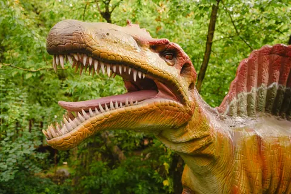
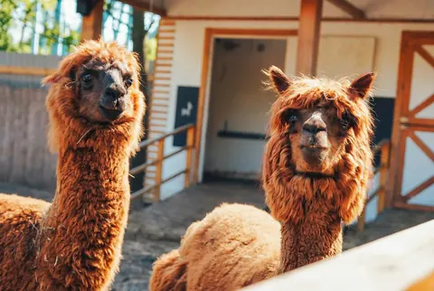
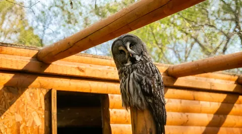
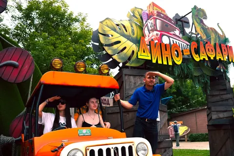
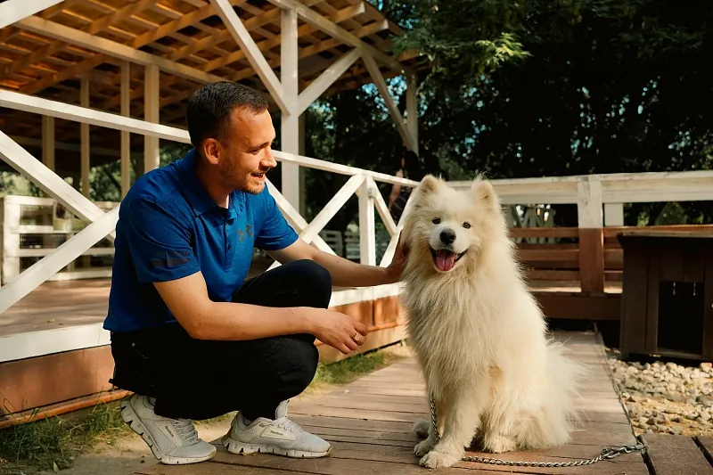
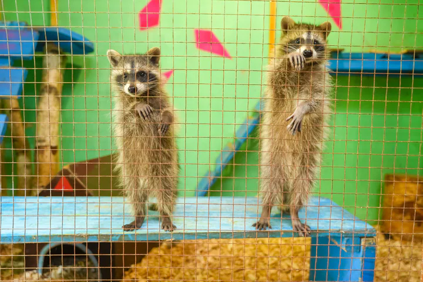
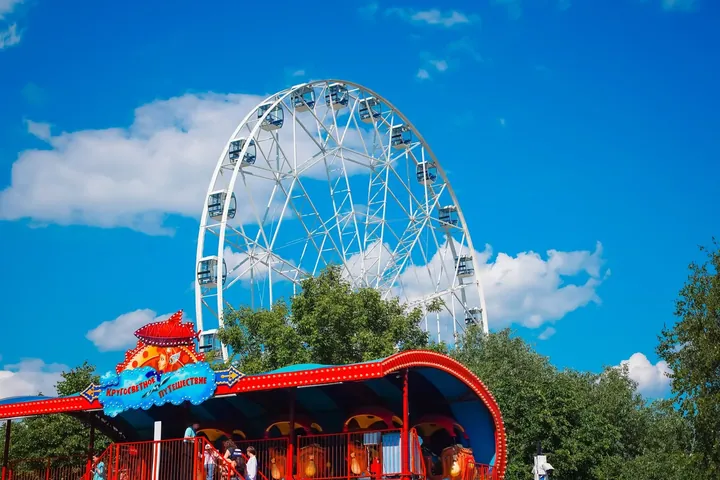

Большой день маленьких открытий
7 тематическихпарков «Сказки»
Динозавры, птицы и пушистые друзья. Соберите свою экспедицию по семи разным мирам.







Динозавр в Дино Парке
Прогноз для Парка «Сказка»
Восемь точек одного приключения
Выберите маршрут исследователя
Откройте карточку — узнайте, кто и что ждёт вас внутри.
Вопросы перед прогулкой
Всё важное о билетах и посещении — в одном месте.
В какие дни парк открыт в октябре?
С 5 по 31 октября парк работает по пятницам, субботам и воскресеньям. Планируйте посещение на один из этих дней.
Для кого этот билет?
Для одного взрослого, который сопровождает ребёнка в тематических парках и на Колесе обозрения. Посещение ребёнка — по его тарифу и правилам конкретной площадки. Этот билет не даёт взрослому доступ к остальным аттракционам.
Какие места входят в билет?
Дино Парк, Альпака Парк, Авиариум, Дино Сафари, Хаски Лэнд, Страус парк и зоодом «Страна ЕНОТиЯ». А ещё — безлимитное Колесо обозрения в подарок.
Как выбрать будни или выходные?
Для октябрьского графика выбирайте будний тариф на пятницу, выходной — на субботу или воскресенье. В официальные праздничные дни действует выходной тариф.
Сколько действует билет?
Билет активируется при первом проходе и действует до конца этого дня. Возвращаться к включённым в тариф развлечениям можно в течение дня.
Что оплачивается отдельно?
Питание, корм для животных и дополнительные услуги не входят в стоимость, если иное не указано в выбранном тарифе.
Все развлечения будут работать?
Работа площадок зависит от погоды и технических условий. Перед поездкой проверьте что сейчас работает на сайте парка.
Есть ограничения по возрасту и росту?
У каждого аттракциона и парка свои правила допуска. Перед посещением проверьте их на странице площадки и следуйте указаниям сотрудников.
Как получить билет и помощь?
После оплаты билет с QR-кодом придёт на указанный email. По вопросам покупки и посещения: +7 495 133-65-56 или info@parkskazka.com.
И Колесо обозрения — в подарок к билету.
Древний мир
Дино Парк
Более 30 динозавров в натуральную величину ждут вас среди зелени. Многие двигаются и издают реалистичные рычащие звуки — будто доисторический мир снова ожил.
Посещение — по правилам площадки и при её работе. Общение с животными — с учётом указаний сотрудников.
Мягкие знакомства
Альпака Парк
Познакомьтесь с альпаками породы уакайа. Их легко узнать по густой мягкой шерсти и дружелюбному характеру. Неспешная прогулка, любопытные взгляды и тёплые семейные фотографии.
Посещение — по правилам площадки и при её работе. Общение с животными — с учётом указаний сотрудников.
Мир пернатых
Авиариум
Отправьтесь в путешествие по 16 тематическим зонам. Здесь живут 55 видов пернатых из разных уголков планеты: наблюдайте за птицами, замечайте необычное оперение и открывайте их удивительные привычки.
Посещение — по правилам площадки и при её работе. Общение с животными — с учётом указаний сотрудников.
Экспедиция в джунгли
Дино Сафари
Садитесь в сафари-джип и отправляйтесь по маршруту через тропический остров. Впереди густые заросли, заброшенная биологическая лаборатория и встреча с её самыми опасными обитателями — динозаврами.
Посещение — по правилам площадки и при её работе. Общение с животными — с учётом указаний сотрудников.
Пушистая компания
Хаски Лэнд
Здесь живут хаски, самоеды, якутские и карело-финские лайки, кеесхонды и благородный олень Оливер. Наблюдайте за обитателями и спрашивайте сотрудников об их характере и привычках.
Посещение — по правилам площадки и при её работе. Общение с животными — с учётом указаний сотрудников.
Большие птицы — большие эмоции
Страус парк
Вас ждут три удивительных вида страусов. Рассмотрите их поближе, сравните размеры и узнайте у сотрудников, чем отличаются эти необычные птицы.
Посещение — по правилам площадки и при её работе. Общение с животными — с учётом указаний сотрудников.
Любопытные соседи
Страна ЕНОТиЯ
Загляните в зоодом, где можно увидеть енотов, сурикатов, ежей, козочек, кроликов, экзотических птиц и многих других обитателей. У каждого — свои привычки и своя история.
Посещение — по правилам площадки и при её работе. Общение с животными — с учётом указаний сотрудников.
Безлимитный подарок к билету
Колесо обозрения
Посмотрите на парк и Москву с высоты. Безлимитное катание на Колесе обозрения — подарок к тематическому билету. Возвращайтесь за новым видом в течение дня, когда аттракцион работает.
Посещение — по правилам площадки и при её работе. Общение с животными — с учётом указаний сотрудников.